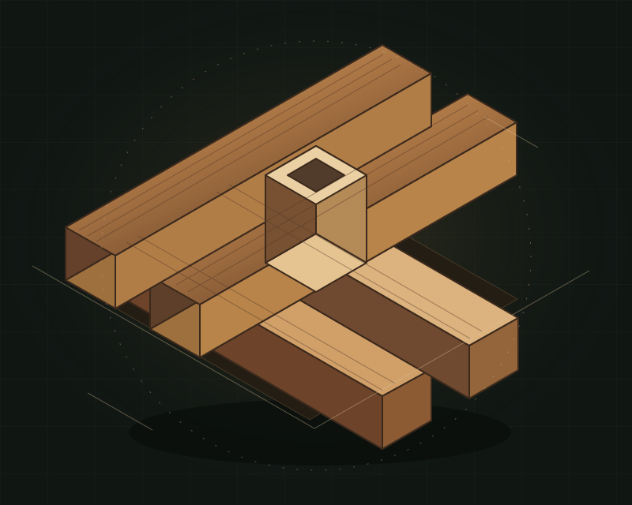
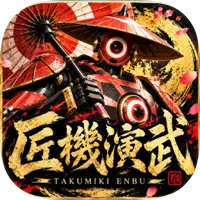
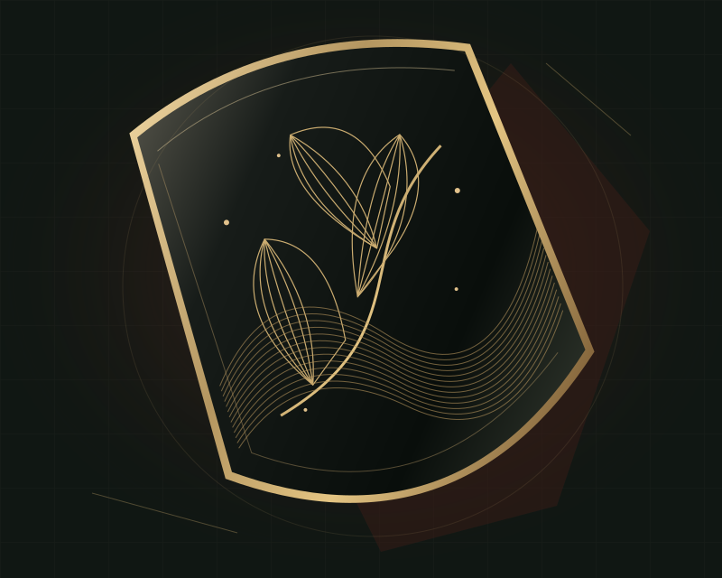
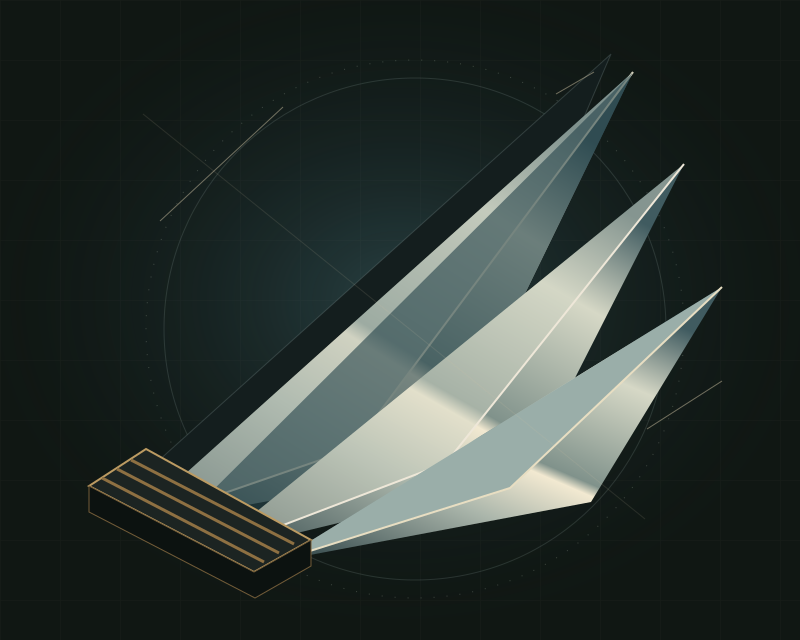
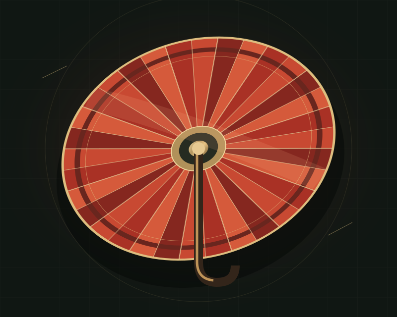
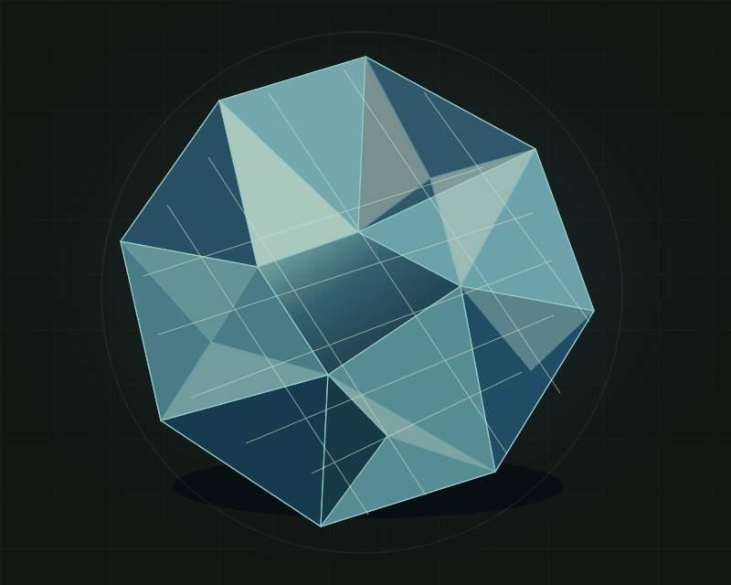
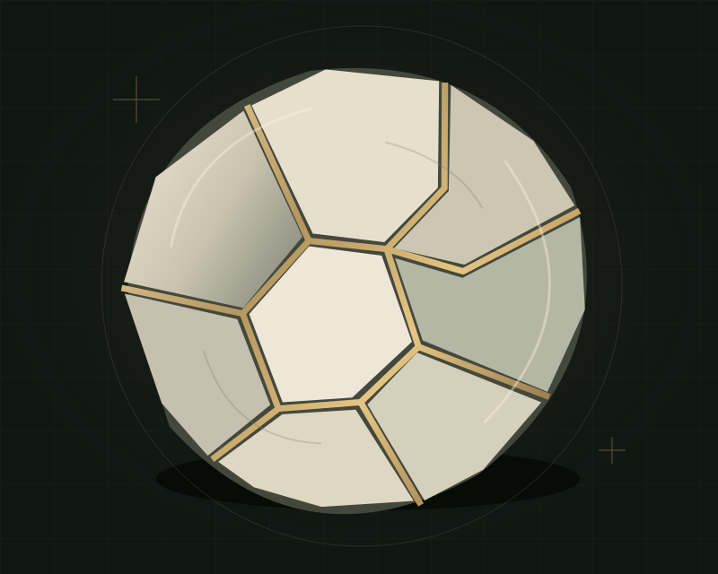

千組
親方・鉄斎から最初に託される二機のうちの一機。見習いとともに、春場所への一歩を踏み出します。
紹介用意匠：組木
匠機演武TAKUMIKI ENBUJAPANESE CRAFT × 3D ROBOT BATTLE
匠の技を、
その手に。
工芸から生まれた機兵と、番付の頂へ。
匠に挑み、勝ち、その一機を受け継ぐ。
iPhoneで遊ぶ、和の3Dロボット対戦。
iPhone / オフライン / タッチ・コントローラー対応
機体画像：App Store掲載ビジュアル
背景装飾：工芸モチーフの紹介用意匠
01 / THE WORLD
匠を訪ねる旅一機一機に、匠の技。
一戦一戦に、受け継ぐ物語。
親方・鉄斎から、千組と沈金を託された見習い。ここから、匠たちの番付に挑む旅が始まります。
対戦相手は、それぞれの技を機兵に込めた匠。取組に勝利すると、その機体を新たな相棒として迎え、自ら操ることができます。
序ノ口から横綱へ。十番を越えた先には、春場所を締めくくる三番の大一番が待っています。
姿も技も異なる機兵
工芸の気配が息づく場所
番付の先に待つ大一番
第一章の内容は、App Storeの公式紹介に基づきます。掲載情報を見る
02 / THE MACHINES
技が宿る機兵組木、漆、刀、和傘、切子。
和の工芸をモチーフに、それぞれの姿と技を持つ機兵たち。
以下の図版は工芸の意匠イメージです。実際の機体モデルではありません。

親方・鉄斎から最初に託される二機のうちの一機。見習いとともに、春場所への一歩を踏み出します。
紹介用意匠：組木
千組とともに、旅の始まりを支える機兵。異なる機体を操りながら、自分に合う戦い方を探してください。
紹介用意匠：漆と金
春場所で出会う機兵の一機。工芸が武へと姿を変える本作で、その名も印象に残る存在です。
紹介用意匠：刀
和の道具の名を冠する、春場所の機兵。武器だけにとどまらない、工芸という発想の広がりを感じさせます。
紹介用意匠：和傘
同じ工芸の世界から生まれても、機兵の姿も技もさまざま。切子も、春場所の顔ぶれに名を連ねます。
紹介用意匠：切子
工芸の名を受け継ぐ、もう一機。手に入れた機兵は対戦で使うほか、鑑賞でじっくり眺めることもできます。
紹介用意匠：金継ぎAND MORE
藍／南部／花火／からくり／凛・壱式／天匠
そして、大一番で姿を現す謎の三機。出会いは物語の先に。
03 / THE BATTLE
立体の駆け引き斬撃、射撃、ブースト、ステップ、飛行、ガード。
六つの操作を使い分け、自分の一機で勝負に挑みます。
斬撃と射撃を使い分け、相手との距離に向き合う。ブーストやステップによる移動、ガードによる守りも、立体バトルを組み立てる要素です。
地上の移動に加え、飛行も使える3Dの舞台。ブースト・ステップ・飛行を交え、平面だけではない動きを楽しめます。
ゲージを溜めて放つ奥義。さらに、ゲージ二本で放つ真奥義。機体ごとに異なる技が、勝負の見せ場をつくります。
まずは「稽古」で操作を確認。第一章はオフラインで遊ぶゲームです。通信対戦には対応していません。
04 / THE MOMENT
戦いを彩る演出機体に寄るカットイン。
和の響きを持つ音楽。
匠たちの言葉を伝える、日本語の声。
App Store掲載の紹介画像です。画像を選ぶと、別タブで拡大できます。横にスワイプして、次の画像へ →
機体ごとに異なる技と、奥義を放つときのカットイン。自分の機兵ならではの見せ場を楽しめます。
「鑑賞」では構えや見得、斬撃・射撃・飛行・奥義のポーズを眺められます。戦いの外でも、一機の魅力を。
物語の会話には日本語の音声を収録。BGMと効果音が取組を彩り、字幕は設定した言語で表示されます。
05 / BEYOND THE BATTLE
巡る、試す、眺める取組ごとの十の舞台と、大一番のための舞台。
工芸と機兵の物語は、その土地の風景とともに。
第一章に登場する舞台の一部をご紹介しています。
手に入れた機体で、相手と舞台を選んで戦う。
動かない相手で操作を確認。慣れるまで、自分のペースで。
機体や勲章、物語をふり返り、歩んだ道を確かめる。
お気に入りの機体を、いくつものポーズで眺める。
06 / IN DEVELOPMENT
これからの匠機演武開発は、いまも続いています。
ここからは、第一章の収録内容とは別の開発予定・構想です。
秋場所以降へ続く物語。春場所の先に広がる取組を、今後の配信として予定しています。
日本から、海外の工芸へ。それぞれの土地で育まれた意匠を、新たな機兵へつなげる構想です。
微細な世界をつくる技術を、機兵のモチーフへ。半導体を題材にした展開も構想しています。
上記は今後の予定・構想です。現行版で遊べる機能や機体を示すものではありません。実装内容・時期・配信の有無は変更になる場合があります。
07 / GAME INFORMATION
製品情報対応するiPhoneのタッチ操作で遊べます。対応ゲームコントローラーも利用でき、縦画面・横画面に対応しています。Android版は今回の公式案内には含まれていません。
1.0はオフラインで動作するゲームです。通信対戦とGame Centerは利用しません。詳しくはプライバシーポリシーをご確認ください。
このページでは今後の開発構想として紹介しています。第一章の収録機体とは分けており、追加内容や時期は確定していません。
進行はiPhone内に保存され、別端末への自動同期はありません。アプリを削除すると保存した進行も失われます。詳しくはサポートをご確認ください。
情報確認日：2026年11月2日。第一章の紹介・製品情報はApp Store公式掲載情報およびサポート・プライバシーポリシーに基づきます。